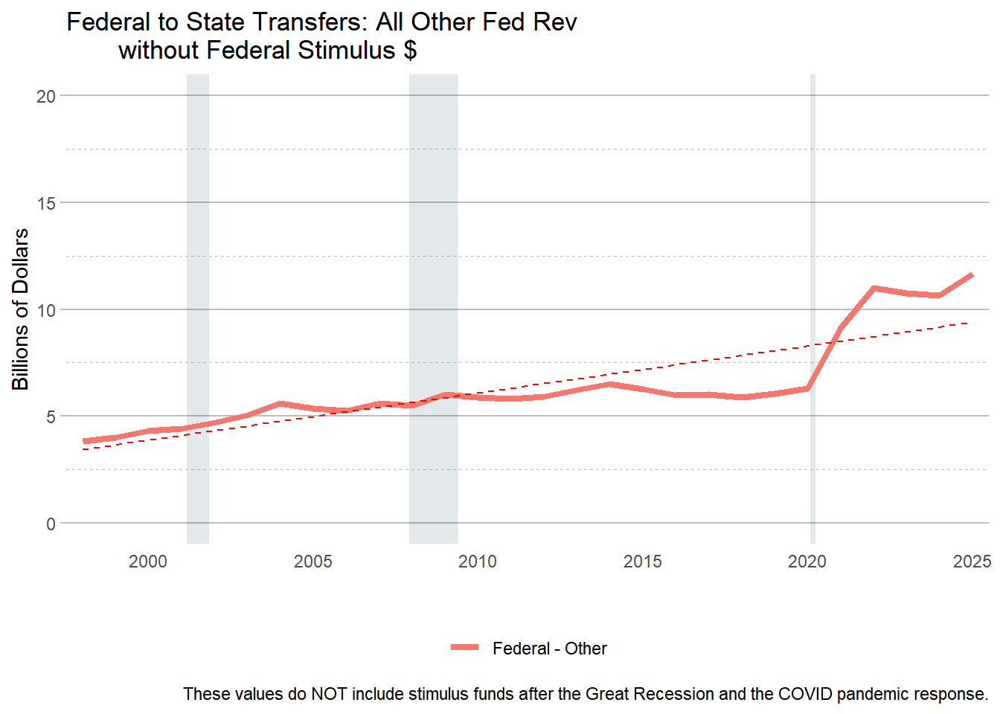
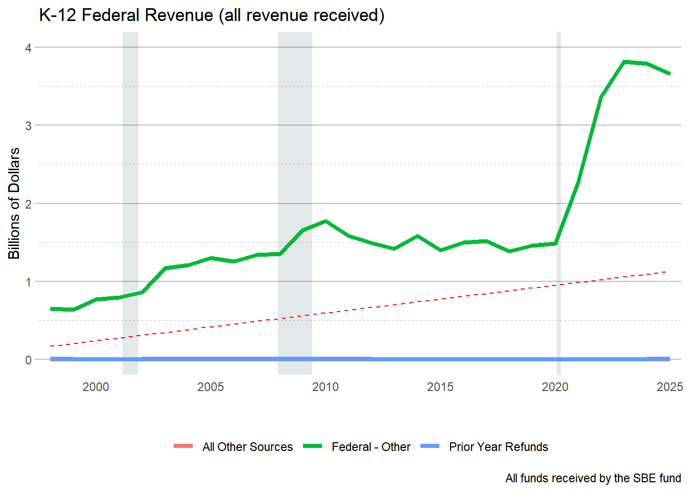

$3.4266 billion Total spent through FY23 from ARP and ESSER Funds. - 1.694 billion spent in 2023 (ARP = ESSER III) but that money arrived in 2022 (=> Fiscal Gap Implications!)
$2.34 Billion of ARP Emergency Relief Funds (aka ESSER III) spent in 2022 and 2023 combined
583 million for ESSER II in 2021
376 million with ESSER I in 2021 and 128 million in 2020.
ISBE received around an additional $7.9 billion total from ESSER compared to its normal federal funding because of COVID
At end of State’s FY23, $3.43/$7.9 billion = ~ 50% spent
As of Dec.7th, it has spent 74.1% of these funds (“ESSER Spending Dashboard” 2023)
640 million allocated for FY24 (according to CPS, I think they have different fiscal years though…)
Code
#|rev_temp <- rev_temp %>%mutate(rev_type =ifelse(rev_type=="57"& agency=="478"& (source=="0618"|source=="2364"|source=="0660"|source=="1552"| source=="2306"| source=="2076"|source=="0676"|source=="0692"), "58", rev_type),rev_type_name =ifelse(rev_type=="58", "Federal Medicaid Reimbursements", rev_type_name),rev_type =ifelse(rev_type=="57"& agency=="494", "59", rev_type),rev_type_name =ifelse(rev_type=="59", "Federal Transportation", rev_type_name),rev_type_name =ifelse(rev_type=="57", "Federal - Other", rev_type_name),rev_type =ifelse(rev_type=="6", "06", rev_type),rev_type =ifelse(rev_type=="9", "09", rev_type)) rev_temp %>%filter(rev_type =="57") %>%group_by(fy, rev_type, rev_type_name) %>%summarise(receipts =sum(receipts, na.rm =TRUE)/1000000000) %>%ggplot(aes(x=fy, y=receipts, color=rev_type_name)) +geom_recessions(xformat ="numeric",text =FALSE)+geom_smooth(aes(x=fy, y = receipts), method = lm, se =FALSE, lty ="dashed", color ="red", alpha = .5, lwd = .5) +geom_line(aes(x=fy, y=receipts,color=rev_type_name), lwd =1.5) +theme_classic() +scale_y_continuous(labels = comma)+scale_x_continuous(expand =c(0,0)) +labs(title ="Other Federal Revenue with federal stimulus funds", caption ="These values include stimulus funds after the Great Recession and the COVID pandemic response.",y ="Billions of Dollars", x ="") +theme(legend.position ="bottom", legend.title =element_blank() )rev_temp %>%filter(rev_type =="57") %>%filter(source_name_AWM !="FEDERAL STIMULUS PACKAGE"& source_name_AWM !="STATE CURE") %>%group_by(fy, rev_type, rev_type_name) %>%summarise(receipts =sum(receipts, na.rm =TRUE)/1000000000) %>%ggplot(aes(x=fy, y=receipts, color=rev_type_name) )+geom_recessions(xformat ="numeric",text =FALSE)+geom_line(aes(x=fy, y=receipts, color=rev_type_name), lwd =1.5) +geom_smooth(aes(x=fy, y = receipts), method = lm, se =FALSE, lty ="dashed", color ="red", alpha = .5, lwd = .5) +theme_classic() +scale_y_continuous(limits =c(0,20), labels = comma)+scale_x_continuous(expand =c(0,0)) +labs(title ="Federal to State Transfers: All Other Fed Rev without Federal Stimulus $", caption ="These values do NOT include stimulus funds after the Great Recession and the COVID pandemic response.",y ="Billions of Dollars", x ="") +theme(legend.position ="bottom", legend.title =element_blank() )

Code
rev_temp %>%filter(rev_type =="57"#fund_name == "SBE FEDERAL DEPT OF EDUCATION" ) %>%group_by(fy) %>%summarise(receipts =sum(receipts, na.rm =TRUE)) %>%mutate(adj_receipts =case_when( fy==2020~ receipts -677964975, # ESSER 1 from CARES fy==2022~ receipts -7353697183, # ARPA ESSER3 + CRRSA ESSER2 $ to ISBE ) )
Figure 11.1
Code
rev_temp %>%filter(fund_name =="SBE FEDERAL DEPT OF EDUCATION") %>%group_by(fy, rev_type, rev_type_name) %>%summarise(receipts =sum(receipts, na.rm =TRUE)/1000000000) %>%ggplot(aes(x=fy, y=receipts, color=rev_type_name)) +geom_recessions(xformat ="numeric",text =FALSE)+geom_smooth(aes(x=fy, y = receipts), method = lm, se =FALSE, lty ="dashed", color ="red", alpha = .5, lwd = .5) +geom_line(aes(x=fy, y=receipts,color=rev_type_name), lwd =1.5) +theme_classic() +scale_y_continuous(limits =c(0,4), labels = comma)+scale_x_continuous(expand =c(0,0)) +labs(title ="K-12 Federal Revenue (all revenue received)", caption ="All funds received by the SBE fund",y ="Billions of Dollars", x ="") +theme(legend.position ="bottom", legend.title =element_blank() )rev_temp %>%filter(rev_type =="57"& fund_name =="SBE FEDERAL DEPT OF EDUCATION") %>%filter(source_name_AWM !="FEDERAL STIMULUS PACKAGE") %>%group_by(fy, rev_type, rev_type_name) %>%summarise(receipts =sum(receipts, na.rm =TRUE)/1000000000) %>%ggplot(aes(x=fy, y=receipts, color=rev_type_name) )+geom_recessions(xformat ="numeric",text =FALSE)+geom_line(aes(x=fy, y=receipts, color=rev_type_name), lwd =1.5) +geom_smooth(aes(x=fy, y = receipts), method = lm, se =FALSE, lty ="dashed", color ="red", alpha = .5, lwd = .5) +theme_classic() +scale_y_continuous(limits=c(0,4),labels = comma)+scale_x_continuous(expand =c(0,0)) +labs(title ="Federal Revenue for K-12", caption ="These values do NOT include stimulus funds after the Great Recession and the COVID pandemic response.",y ="Billions of Dollars", x ="") +theme(legend.position ="bottom", legend.title =element_blank() )
Figure 11.2

Figure 11.3
Code
K12rev <- rev_temp %>%filter( fund_name =="SBE FEDERAL DEPT OF EDUCATION"& agency_name =="STATE BOARD OF EDUCATION") %>%group_by(fy) %>%summarize(receipts =round(sum(receipts)/1000000)) %>%arrange(-receipts)K12exp <- exp_temp %>%filter( fund_name =="SBE FEDERAL DEPT OF EDUCATION"& agency_name =="STATE BOARD OF EDUCATION") %>%group_by(fy) %>%summarize(expenditure =round(sum(expenditure)/1000000)) %>%arrange(-expenditure)ggplot() +geom_line(data = K12rev, aes(x=fy, y = receipts), lty =1 ) +geom_line(data = K12exp, aes(x=fy, y = expenditure), lty =2) +scale_x_continuous(expand =c(0,0))
# looks at ISBE federal funding after 2018# gives a sort of base comparison of funding before pandemic# ESSER revenue sources had multiple source names so lots of scrolling and CTRL-F searching was donerev_temp %>%filter(#rev_type == "57" & fy >2018& fund_name =="SBE FEDERAL DEPT OF EDUCATION") %>%group_by(source_name_AWM , fund_name, fy) %>%summarize(receipts =round(sum(receipts)/1000000)) %>%arrange(-receipts)
Code
fedrev<- rev_temp %>%filter(rev_type =="58"| rev_type =="59"| rev_type =="57") fedrev %>%group_by(fy) %>%summarise(receipts =sum(receipts, na.rm =TRUE)/1000000000) %>%ggplot() +geom_line(aes(x=fy, y=receipts)) +theme_classic() +scale_y_continuous(labels = comma)+labs(title ="All Federal Revenue w/ Fed. Stimulus Package", y ="Billions of Dollars", x ="") +theme(legend.position ="bottom", legend.title =element_blank() )+scale_y_continuous(limits =c(0,45))fedrev %>%filter(source_name_AWM !="FEDERAL STIMULUS PACKAGE") %>%group_by(fy) %>%summarise(receipts =sum(receipts, na.rm =TRUE)/1000000000) %>%ggplot() +geom_line(aes(x=fy, y=receipts)) +theme_classic() +scale_y_continuous(labels = comma)+labs(title ="All Federal Rev EXCEPT Federal Stimulus Package", y ="Billions of Dollars", x ="",caption ="Note: Dropping Federal Stimulus Package revenue only removes the $3.5 billion from FY20, $0.3 billion from FY21, and $8.5 billion from FY22. There is still over $12 billion more in Federal Revenue compared to FY19.") +theme(legend.position ="bottom", legend.title =element_blank() ) +scale_y_continuous(limits =c(0,45))
All Federal Revenue
All Federal Revenue
## Looking at ESSER funds spent per year ## exp_temp %>%filter(fy >2018& fund_name =="SBE FEDERAL DEPT OF EDUCATION"& agency_name =="STATE BOARD OF EDUCATION") %>%group_by(wh_approp_name) %>%summarize(expenditures =round(sum(expenditure)/1000000, digits =2))
Table 11.1: All Appropriations made by State Board of Education - funds spent per state fiscal year
Key words and phrases from the appropriations above were used to identify appropriations that specifically used ESSER funds.